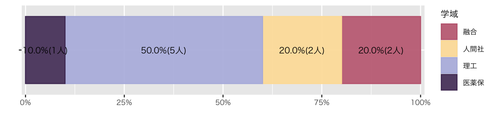

Ⅰ. なぜRなのか
- 無料
- コード
- 再現可能性
- 作業の効率化
- 初期コストはすぐに回収できる
- 豊富な可視化ツール
- 豊富な出力パッケージ
- Documents
- Presentations
- Dashboards
- Website
- ➡ YAML（ファイル冒頭部分）を変えるだけ
- 親切なコミュニティ
Cf. Microsoft Excel / SPSS / python
Ⅱ. シラバス
Ⅲ. サンプル
1. ggplot（受講者の属性）
df_受講生 %>% #対象とするデータフレーム
group_by(学域) %>% #学域でデータを分ける
summarise( #分けたデータの個数を数える
人数 = n()
) %>%
mutate(
比率 = 人数/sum(人数) #個数から比率を算出
) %>%
ungroup() %>% #グルーピングの解除
ggplot(aes(x = "", y = 人数, group = 学域)) + #図の台座
geom_col( #帯グラフ
aes(color = 学域, fill = after_scale(alpha(color, 0.9))),
position = position_fill(),
) +
geom_text( #帯グラフにテキストを貼る
aes(label = str_c(scales::percent(比率, accuracy = 0.1), "(", 人数, "人)")),
position = position_fill(reverse = FALSE, vjust = 0.5),
) +
scale_y_continuous( #Y軸の余白を詰める
expand = expansion(mult = c(0.01, 0.01)),
labels = scales::label_percent()) + #Y軸をパーセントにする
labs( #ラベル名（ここではxとyのラベルを削除）､凡例を変更
x = "",
y = "",
color = "学域" #ここで凡例を変える
) +
coord_flip() + #X軸とY軸を逆転させる
scale_color_paletteer_d("DresdenColor::briefcases") #配色変更
Code
df_受講生 %>%
group_by(年次) %>%
summarise(
人数 = n()
) %>%
mutate(
比率 = 人数/sum(人数)
) %>%
ungroup() %>%
ggplot(aes(x = "", y = 人数, group = 年次)) +
geom_col(
aes(color = 年次, fill = after_scale(alpha(color, 0.9))),
position = position_fill(),
) +
geom_text(
aes(label = str_c(scales::percent(比率, accuracy = 0.1), "(", 人数, "人)")),
position = position_fill(reverse = FALSE, vjust = 0.5),
) +
scale_y_continuous(
expand = expansion(mult = c(0.01, 0.01)),
labels = scales::label_percent()) +
labs(
x = "",
y = "",
color = "年次"
) +
coord_flip() +
scale_color_paletteer_d("PrettyCols::Fun")
2. マップ
Code
leaflet() %>%
addTiles() %>%
setView(lng = 136.70847,
lat = 36.54517,
zoom = 18)高大接続コア・センター（インキュベーション施設3F）
Ⅳ. 図
- 理論
- 『図りすぎ』
Ⅴ. アンケート
note | 回答先と締め切り
- 回答先：Google Forms
Code
df_初回アンケート %>%
group_by(学域) %>%
summarise(
人数 = n()
) %>%
mutate(
比率 = 人数/sum(人数)
) %>%
ungroup() %>%
ggplot(aes(x = "", y = 人数, group = 学域)) +
geom_col(
aes(color = 学域, fill = after_scale(alpha(color, 0.9))),
position = position_fill(),
) +
geom_text(
aes(label = str_c(scales::percent(比率, accuracy = 0.1), "(", 人数, "人)")),
position = position_fill(reverse = FALSE, vjust = 0.5),
) +
scale_y_continuous(
expand = expansion(mult = c(0.01, 0.01)),
labels = scales::label_percent()) +
labs(
x = "",
y = "",
color = "学域"
) +
coord_flip() +
scale_color_paletteer_d("DresdenColor::briefcases") #配色変更Code
df_初回アンケート %>%
group_by(学域, `Q5. 受講理由でもっとも近いものを選んでください`) %>%
summarise(
人数 = n()
) %>%
mutate(
比率 = 人数/sum(人数)
) %>%
ungroup() %>%
ggplot(aes(x = "", y = 人数, group = 学域)) +
geom_col(
aes(color = `Q5. 受講理由でもっとも近いものを選んでください`, fill = after_scale(alpha(color, 0.9))),
position = position_fill(),
) +
geom_text(
aes(label = str_c(scales::percent(比率, accuracy = 0.1), "(", 人数, "人)")),
position = position_fill(reverse = FALSE, vjust = 0.5),
) +
scale_y_continuous(
expand = expansion(mult = c(0.01, 0.01)),
labels = scales::label_percent()) +
labs(
x = "",
y = "",
color = "Q5"
) +
coord_flip() +
facet_wrap(~ 学域) +
scale_color_paletteer_d("DresdenColor::briefcases")`summarise()` has grouped output by '学域'. You can override using the
`.groups` argument.
Code
df_初回アンケート %>%
group_by(学年) %>%
summarise(
人数 = n()
) %>%
mutate(
比率 = 人数/sum(人数)
) %>%
ungroup() %>%
ggplot(aes(x = "", y = 人数, group = 学年)) +
geom_col(
aes(color = 学年, fill = after_scale(alpha(color, 0.9))),
position = position_fill(),
) +
geom_text(
aes(label = str_c(scales::percent(比率, accuracy = 0.1), "(", 人数, "人)")),
position = position_fill(reverse = FALSE, vjust = 0.5),
) +
scale_y_continuous(
expand = expansion(mult = c(0.01, 0.01)),
labels = scales::label_percent()) +
labs(
x = "",
y = "",
color = "年次"
) +
coord_flip() +
scale_color_paletteer_d("PrettyCols::Fun")
Code
df_初回アンケート %>%
select(5:10) %>%
ggplot(aes(x = `Q1. パソコンのスキルに自信がありますか`,
y = `Q2. R言語を知っていますか？`, color = 学域)) +
geom_point()
Tips | コードの利点
- アンケート実施前に､コードを書ける
- アンケート回収後すみやかに､可視化（分析）できる
Ⅵ. インストール
3と4は次の「プロジェクトの作成」内で実行します
Ⅶ. プロジェクトの作成
- OS: フォルダ作成
- R Studio: File > New Project > Existing Directory > 1 のフォルダを指定 > Create Project
- R Studio: File > Quarto Document > Create
- Title:
- HTML
- 基本パッケージのインストール
- 教科書のデータセットのインストール
- 動作確認テスト（iris）
注意 | コードの入力
- 短いコードなので､手入力しましょう
- R Studioがファンクションを補完してくれることがわかるはずです
- 「#」以下の文字は入力しません
- 「#」は注記のため､もしくは一時的に実行したくないコードのために使います（コメントアウトと言います）
Code
#パッケージの読み込み
library(tidyverse) #「モダンなデータ分析」を行うためのパッケージ群
library(ggplot2) #可視化パッケージ
#図を描くためのコード
iris %>% # iris：Rにはじめから入っているデータセット
# 「%>%」は「コマンド + シフト + M」で入力できます
# 「%>%」は指示が次に続くことを意味します
ggplot(aes(x = Sepal.Length,
y = Petal.Length)) + # 「+」も指示が次に続くことを意味します。ggplotの指示はすべて「+」で繋げます
geom_point() # 散布図
note | コードの実行
- コードを入力できたら､右上の「三角」を押して､コードを実行しましょう
- 「コマンド ＋ シフト + I」でインデントが揃います
- インデントを揃える習慣をつけてください
Ⅷ. 宿題
授業の感想：
note | 回答先と締め切り
- 回答先：Google Forms
- 締め切り：2024年6月14日（金）23時59分まで
Copyright
苅谷千尋